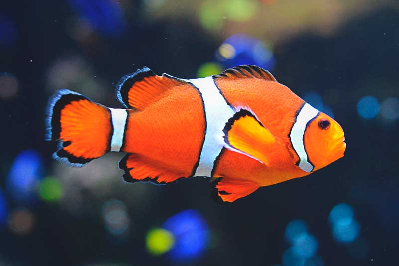

Pez Payaso
Pez Payaso

Los peces payaso son nativos del océano Pacífico y del océano Índico. Habitan sus aguas cálidas, lo que incluye a la Gran Barrera de Coral en Australia y al mar Rojo,
entre África y Asia. Y, ¿dónde vive el pez payaso? Habita arrecifes de poca profundidad. La mayoría habita dentro o alrededor de las anémonas de dichos arrecifes,
ya que proporcionan un buen refugio contra los depredadores.
Características:
- Los peces payaso miden de 10 a 18 centímetros de longitud, siendo los machos más pequeños que las hembras.
- El pez payaso destaca gracias a sus colores, como el naranja, entremezclados con franjas blancas y bordes negros.
- Esta especie tiene una aleta caudal redondeada y una mucosa a lo largo de la piel que le permite estar en contacto directo con las anémonas sin sufrir las consecuencias de su veneno.
- El pez payaso es un animal vertebrado porque su cuerpo incluye internamente un esqueleto, y este lo ayuda a moverse más rápido
- Este pequeño pez puede llegar a vivir unos 10 años gracias a que hace de la anémona su centro de operaciones y su refugio.
Regresar al Inicio